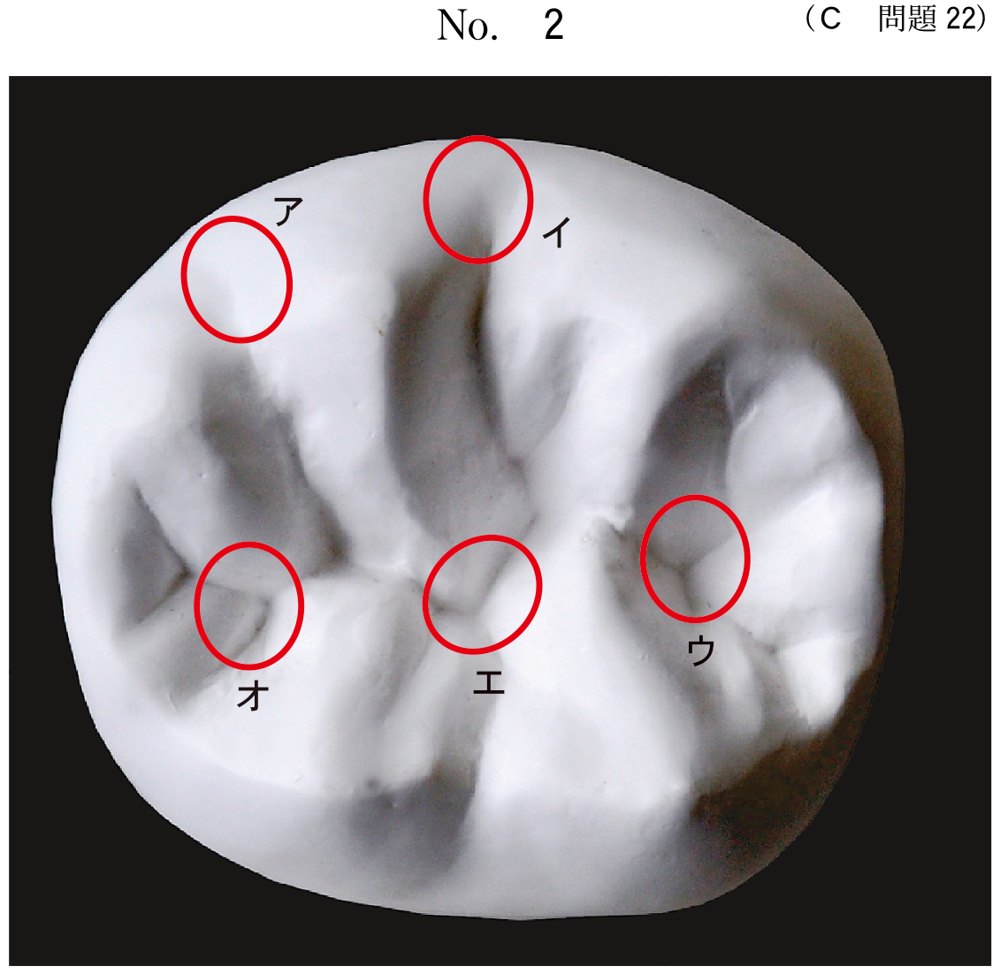

咬座印象
咬座印象とは
咬座印象とは、患者に咬合させながら印象採得を行う方法である。ハンドルのない個人トレーを用い、咬合圧を印象圧として利用する。
咬座印象の特徴
- 口唇の機能運動ができる
- 咬合時の印象採得ができる
- 咬合平面に対し垂直な圧が加わる
- 機能時の粘膜状態を記録できる
作業用模型の製作
精密印象から作業用模型を製作する。義歯製作の基礎となる重要な模型である。
模型の調整
- リリーフ：特定部位の粘膜に過度の圧力が加わらないよう空隙を設ける
- ブロックアウト：アンダーカット部をワックスなどで埋める
- 後堤法：ポストダムを付与して後縁封鎖を図る
リリーフが必要な部位
- 口蓋隆起：被圧変位量が小さい
- 切歯乳頭：鼻口蓋神経・血管が存在
- 顎舌骨筋線：骨が表在し疼痛を生じやすい
- 下顎隆起：被圧変位量が小さい
- フラビーガム：被圧変位量が大きい
リリーフが不要な部位
| 部位 | 理由 |
|---|---|
| 頬棚 | 咬合圧負担域（支持に重要） |
| 口蓋小窩 | 後縁封鎖に関与 |
| アーライン | ポストダムを設定する部位 |
| レトロモラーパッド | 下顎義歯の後縁設定に重要 |
義歯完成後の検査
義歯装着時には各種検査を行い、適合状態を確認する。
義歯装着時の検査項目
- 咬合検査：咬合紙による咬合接触の確認
- 適合検査：適合試験材による床粘膜面の適合確認
- 発音検査：構音機能の確認
- 審美性の確認
過去問
104C49
全部床義歯製作時の作業用模型の写真（別冊No.3）を別に示す。
矢印と同じ処置が必要な部位はどれか。1つ選べ。

a 頬 棚
b 口蓋小窩
c 顎舌骨筋線
d アーライン
e レトロモラーパッド
b 口蓋小窩
c 顎舌骨筋線
d アーライン
e レトロモラーパッド
正解：c
【解説】矢印は口蓋隆起のリリーフを示している。同様にリリーフが必要な部位は顎舌骨筋線（骨が表在し疼痛を生じやすい）。頬棚やレトロモラーパッドは支持に重要でリリーフ不要。
109A81
全部床義歯製作時のリリーフ領域はどれか。2つ選べ。
a 頰 棚
b 口蓋隆起
c 切歯乳頭
d 大口蓋孔
e レトロモラーパッド
b 口蓋隆起
c 切歯乳頭
d 大口蓋孔
e レトロモラーパッド
正解：b, c
【解説】リリーフが必要なのは口蓋隆起（被圧変位量が小さい）と切歯乳頭（鼻口蓋神経・血管が存在）。頬棚とレトロモラーパッドは支持に重要でリリーフしない。大口蓋孔は通常リリーフ不要。
112D45
70歳の男性。咀嚼困難を主訴として来院した。上顎左側臼歯部欠損による咀嚼障害と診断し、義歯を新製することとした。義歯製作中のある過程の写真（別冊No.3）を別に示す。
次回来院時に行うのはどれか。3つ選べ。

a 咬合検査
b 適合検査
c 発音検査
d 咬合力検査
e 咀嚼機能検査
b 適合検査
c 発音検査
d 咬合力検査
e 咀嚼機能検査
正解：a, b, c
【解説】写真は義歯完成前の段階。次回の義歯装着時に行う検査は咬合検査、適合検査、発音検査。咬合力検査や咀嚼機能検査は義歯使用後の機能評価。